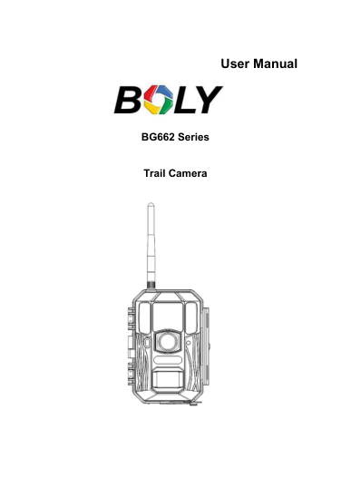
BG662-M Series User Manual
Boly manufacturer
31 стр. · 1.1 МБ · упоминания USB/ПК: 4, 31
16 скачанных PDF. Проверка источников для всех 57 именных групп нашего каталога. Найденное руководство не доказывает работу автономного USB-опроса.
Документы производителя Boly, бренда Suntek, SEELOCK и TELTOS отмечены по месту публикации. Дистрибьюторский перевод не выдаётся за оригинал производителя. Названия похожих моделей и семейства не гарантируют одинаковую плату. PDF-страницы указаны от начала файла. Сканированные документы могут не иметь текстового слоя. Для 35 безымянных OEM-позиций нужна маркировка камеры.
Подтверждено: BG410, PDF-стр. 4 описывает MSC и копирование фото. Не подтверждено: автоматический возврат любой из камер в режим охраны после управляемого отключения USB.

Boly manufacturer
31 стр. · 1.1 МБ · упоминания USB/ПК: 4, 31
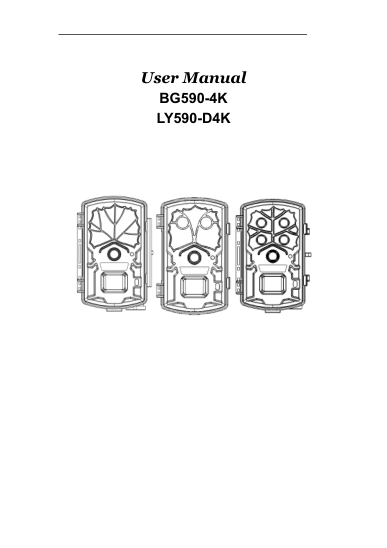
Boly manufacturer
17 стр. · 0.5 МБ · упоминания USB/ПК: 3, 17
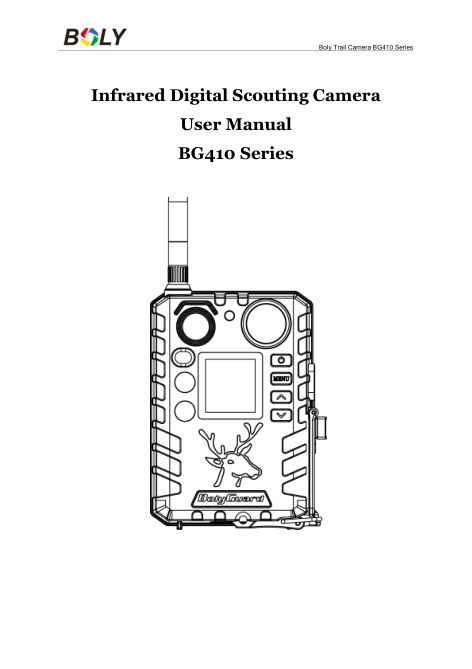
Boly manufacturer
24 стр. · 1.3 МБ · упоминания USB/ПК: 3, 4, 10, 23
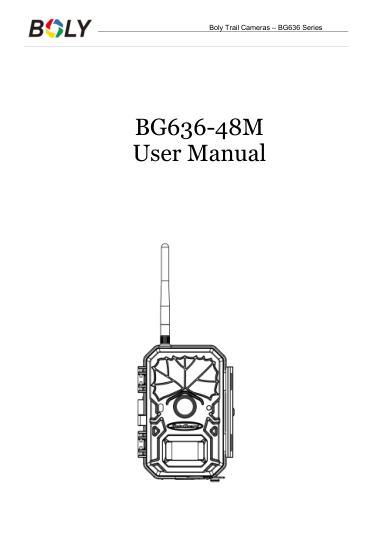
Boly manufacturer
30 стр. · 1.2 МБ · упоминания USB/ПК: 3, 30
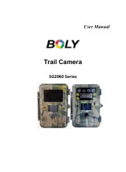
Boly manufacturer
20 стр. · 0.4 МБ · упоминания USB/ПК: 20
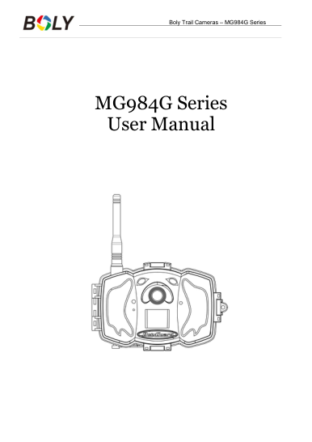
Boly manufacturer
32 стр. · 1.2 МБ · упоминания USB/ПК: 32
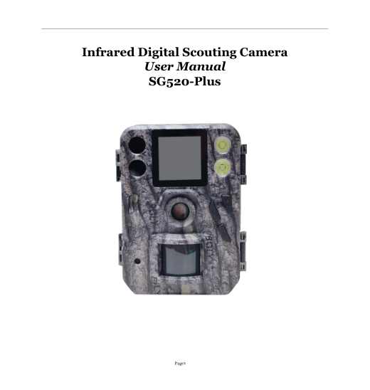
Boly manufacturer
16 стр. · 0.6 МБ · упоминания USB/ПК: не найдены в текстовом слое
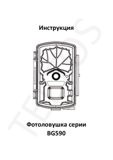
teltos24.ru brand/distributor source
8 стр. · 1.2 МБ · упоминания USB/ПК: 2
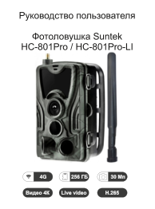
suntekcam.ru brand/distributor source
16 стр. · 4.0 МБ · упоминания USB/ПК: не найдены в текстовом слое
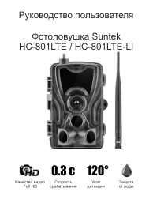
suntekcam.ru brand/distributor source
27 стр. · 1.5 МБ · упоминания USB/ПК: 2, 5
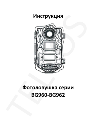
teltos24.ru brand/distributor source
8 стр. · 1.2 МБ · упоминания USB/ПК: 3, 4
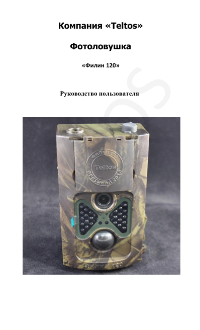
teltos24.ru brand/distributor source
19 стр. · 1.8 МБ · упоминания USB/ПК: 3, 7, 14, 16, 18, 19
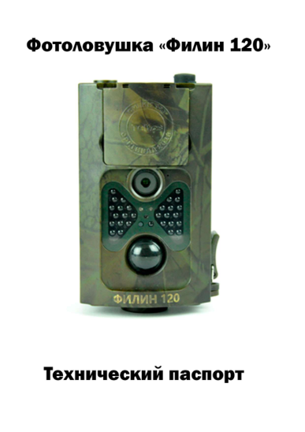
teltos24.ru brand/distributor source
11 стр. · 1.9 МБ · упоминания USB/ПК: не найдены в текстовом слое
teltos24.ru brand/distributor source
15 стр. · 1.5 МБ · упоминания USB/ПК: 3, 5, 13, 14, 15
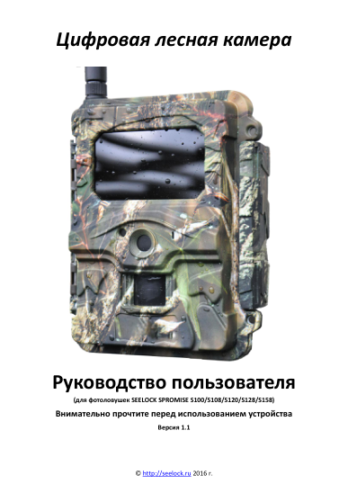
Seelock brand site
16 стр. · 0.9 МБ · упоминания USB/ПК: 2, 7, 8
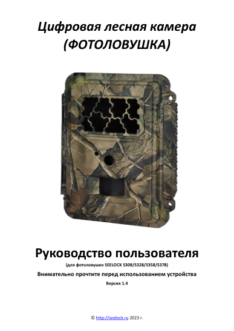
Seelock brand site
24 стр. · 1.6 МБ · упоминания USB/ПК: 2, 8, 9, 15
cnsuntek.com brand/distributor source
Загрузка не удалась: ReadTimeout
cnsuntek.com brand/distributor source
Загрузка не удалась: ReadTimeout
cnsuntek.com brand/distributor source
Загрузка не удалась: ReadTimeout
cnsuntek.com brand/distributor source
Загрузка не удалась: ReadTimeout
Suntek brand site
Загрузка не удалась: ReadTimeout
Suntek brand site
Загрузка не удалась: ReadTimeout
Suntek brand site
Загрузка не удалась: ReadTimeout
«Не найдено» означает отсутствие подходящего документа по результатам поиска 07.10.2026. Это не означает отсутствия USB. Поисковые совпадения с другой моделью не использованы как подтверждение.
| Модель | Соответствие инструкции | Документ |
|---|---|---|
| BG590-4K | Документ для модели/серии найден; сверить ревизию | |
| SG520-PLUS | Документ для модели/серии найден; сверить ревизию | |
| DL11T2 | Подходящее официальное руководство не найдено | — |
| HC900A | Официальная ссылка найдена, скачать не удалось | Источник |
| MINI700W | Подходящее официальное руководство не найдено | — |
| HC550A | Подходящее официальное руководство не найдено | — |
| HC801A | Подходящее официальное руководство не найдено | — |
| HT001 | Подходящее официальное руководство не найдено | — |
| MINI301 | Подходящее официальное руководство не найдено | — |
| WIFI-900-PRO | Официальная ссылка найдена, скачать не удалось | Источник |
| HC900 | Подходящее официальное руководство не найдено | — |
| HC801MAXLI | Подходящее официальное руководство не найдено | — |
| HC550G-4G-APP | Подходящее официальное руководство не найдено | — |
| HC400-AH-LI | Подходящее официальное руководство не найдено | — |
| HC550M-2G | Подходящее официальное руководство не найдено | — |
| HC800A | Подходящее официальное руководство не найдено | — |
| BG636-48M | Документ для модели/серии найден; сверить ревизию | |
| MG984G-36M | Документ для модели/серии найден; сверить ревизию | |
| BG662-M | Документ для модели/серии найден; сверить ревизию | |
| BOLY EZGO | Подходящее официальное руководство не найдено | — |
| SG2060-T | Документ для модели/серии найден; сверить ревизию | |
| DL001 | Подходящее официальное руководство не найдено | — |
| HC600PRO | Подходящее официальное руководство не найдено | — |
| HC950PRO-LI | Подходящее официальное руководство не найдено | — |
| HC960PROLI | Подходящее официальное руководство не найдено | — |
| KG895F | Подходящее официальное руководство не найдено | — |
| LTL 8816W-4G | Подходящее официальное руководство не найдено | — |
| LTL 8830W-4G | Подходящее официальное руководство не найдено | — |
| MINI900PRO4G | Подходящее официальное руководство не найдено | — |
| HC300A | Подходящее официальное руководство не найдено | — |
| HC801LTE | Документ для модели/серии найден; сверить ревизию | |
| HC801LTE-LI | Документ для модели/серии найден; сверить ревизию | |
| HC801M | Подходящее официальное руководство не найдено | — |
| HC801PRO-LI | Документ для модели/серии найден; сверить ревизию | |
| HC810PRO | Подходящее официальное руководство не найдено | — |
| HC900LTE-LI | Подходящее официальное руководство не найдено | — |
| HC900PRO | Подходящее официальное руководство не найдено | — |
| HC935A-LI | Подходящее официальное руководство не найдено | — |
| HC940 | Подходящее официальное руководство не найдено | — |
| HC940A | Подходящее официальное руководство не найдено | — |
| HC940PRO-LI | Официальная ссылка найдена, скачать не удалось | Источник |
| HC900PRO-LI | Подходящее официальное руководство не найдено | — |
| TUYA940-LI | Подходящее официальное руководство не найдено | — |
| HC300M | Подходящее официальное руководство не найдено | — |
| TELTOS120 | Документ для модели/серии найден; сверить ревизию | |
| TELTOS1204GPRO | Подходящее официальное руководство не найдено | — |
| ЕГЕРЬКАМ ЗОРКИЙ | Подходящее официальное руководство не найдено | — |
| ЕГЕРЬКАМ СНАЙПЕР | Подходящее официальное руководство не найдено | — |
| ЕГЕРЬКАМ ЗОРКИЙ МИНИ | Подходящее официальное руководство не найдено | — |
| ЕГЕРЬКАМ СНАЙПЕР МИНИ | Подходящее официальное руководство не найдено | — |
| HC801BH | Подходящее официальное руководство не найдено | — |
| HC700-AH | Подходящее официальное руководство не найдено | — |
| TELTOS001 | Подходящее официальное руководство не найдено | — |
| HC700 | Подходящее официальное руководство не найдено | — |
| KG895 | Подходящее официальное руководство не найдено | — |
| HC910 | Подходящее официальное руководство не найдено | — |
| BG410-M | Документ для модели/серии найден; сверить ревизию |